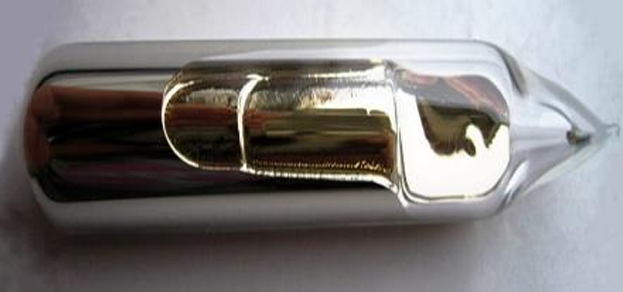
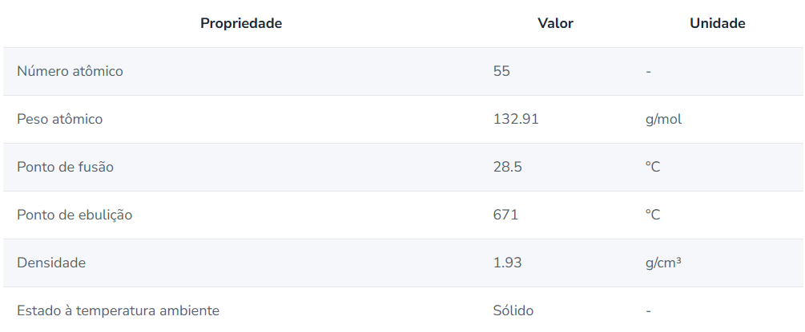

| Característica | Informação |
|---|---|
| Nome | Césio (Cs) |
| Estado físico do elemento em temperatura ambiente | Em temperatura ambiente padrão (até 25 °C), o Césio (Cs) encontra-se em estado sólido. No entanto, devido ao seu baixíssimo ponto de fusão (28,5 °C), ele pode se liquefazer em temperaturas relativamente baixas. |
| Aparência ou coloração | O césio é um metal macio, dúctil e de coloração dourada-prateada. |
| Imagem do Césio (Cs) |
 |
| Principais Propriedades |
O césio está entre os metais mais reativos
e possui baixa energia de ionização, o que
facilita a perda de seu elétron de valência.
A reação do césio com a água produz hidróxido de césio (CsOH) e gás hidrogênio, liberando uma quantidade significativa de calor. Seus compostos possuem aplicações em diferentes setores, como síntese química, fotônica e fluidos utilizados na indústria de petróleo. |
| Tabela de propriedades |
 |
PROFESSORES QUE
AUXILIARAM NO PROJETO

Allan Vidal
Professor de PWII

Elaine
Professora de Química